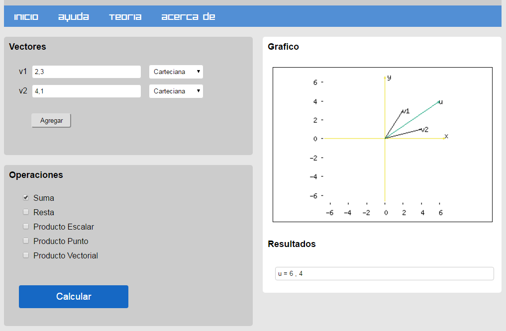

Ejemplo para suma de vectores
Para sumar vectores se elije el tipo de dato con el cual se va a operar y luego se ingresan los valores. Para el caso de las coordenadas cartesianas se ingresan los valores de las componentes del vector con su signo y separadas por una coma. Luego en el menu de operaciones se elije el calculo a realizar. Los vectores seran graficados en el area de la derecha y los resultados numericos son mostrados debajo.
